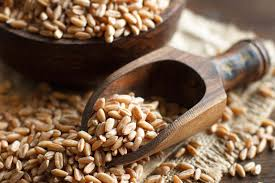
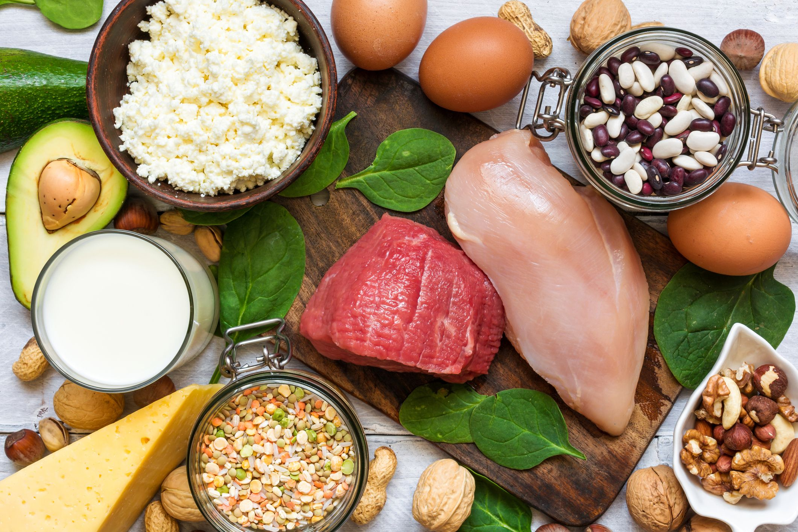

Any vegetable or 100% vegetable juice counts as a member of the Vegetable Group. Vegetables may be raw or cooked; fresh, frozen, canned, or dried/dehydrated; and may be whole, cut-up, or mashed.
Based on their nutrient content, vegetables are organized into 5 subgroups: dark-green vegetables, starchy vegetables, red and orange vegetables, beans and peas, and other vegetables.
The amount each person needs can vary between 1 and 3 cups each day.

Grains are divided into 2 subgroups: Whole Grains and Refined Grains.Examples of whole grains include whole-wheat flour, bulgur (cracked wheat), oatmeal, whole cornmeal, and brown rice. Some examples of refined grain products are white flour, de-germed cornmeal, white bread, and white rice.
The amount each person needs can vary between 3 and 8 ounce-equivalents each day -- at least half of the grains you eat should be whole grains. Those who are very physically active may need more.

All foods made from meat, poultry, seafood, beans and peas, eggs, processed soy products, nuts, and seeds are considered part of the Protein Foods Group.The amount each person needs can vary between 2 and 6½ ounce-equivalents each day.
In general, 1 ounce of meat, poultry or fish, ¼ cup cooked beans,1 egg, 1 tablespoon of peanut butter, or ½ ounce of nuts or seeds can be considered as 1 ounce-equivalent from the Protein Foods Group.